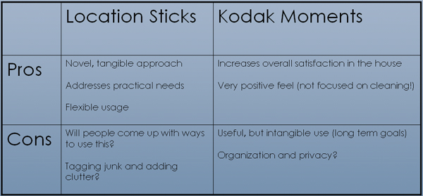

Summary
Summary| Research |
Synthesis |
Design |
Solution |
Synthesis |
06 Decision |
In our concept validation, there were two concepts that especially resonated with those we tried the ideas on: Location Sticks and Kodak Moments. (See concept ideation section for more information.) We made a list of the needs that these concepts fulfilled and this is what we came up with.
Location Sticks
Awareness
“I’m aware that this is a mess,
and I’ll get to it soon.”
Reminders
“Where are my keys?
“I should remember to clean this.”
Coordination
“We’re almost out of milk.”
Kodak Moments
House Pride
“Would be fun to show when
people come over.”
Awareness
“We haven’t had a party in awhile – we should fire up the barbecue.”
Memories
“Oh remember that night
we had that awesome
dinner party.”
We also made the following chart to put the pros and cons into place:

In truth, it was a really hard decision. Both of the ideas were interesting spaces to explore and both had utility, albeit in different ways. The location sticks seemed like they would be more practical, while kodak moments had a positive feel and far-reaching goal but its value was more intangible.
In the end, we chose kodak moments (which was later renamed to PicturePal). We believe that this concept addresses a much deeper issue in which technology would not just help people in day to day activities but actually change their interactions and relationships over time. The people we spoke to about our ideas were very enthusiastic about kodak moments and the idea of the home as a collection of memories. For these reasons, we decided on kodak moments: an intelligent agent to facilitate and strengthen the social bonds between roommates.